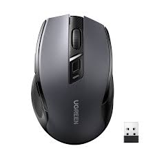
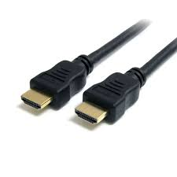
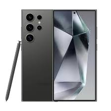
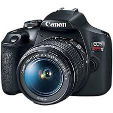
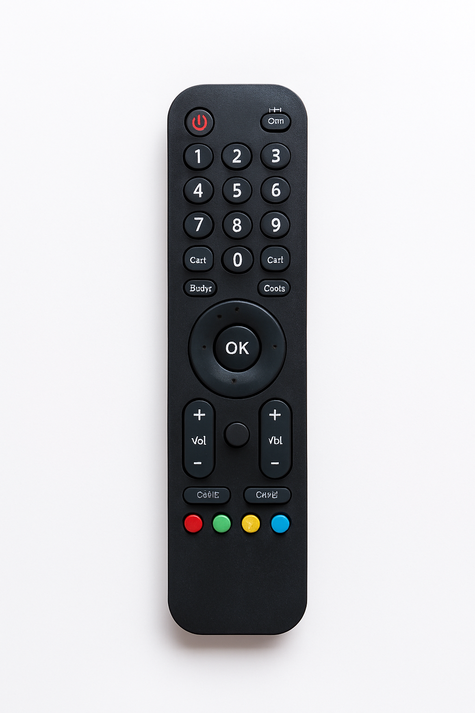

Es una máquina electrónica capaz de recibir datos, procesarlos y producir información útil a través de programas o software.
PEs una tecnología de conexión que permite transferir datos y energía eléctrica entre una computadora y otros dispositivos electrónicos

Es un dispositivo de entrada que permite controlar el movimiento del cursor o puntero en la pantalla de una computadora.

Es un tipo de conexión digital que transmite audio y video de alta calidad entre diferentes dispositivos.

Con la mayor cantidad de megapíxeles en un teléfono inteligente y procesamiento de AI, el Galaxy S24 Ultra establece el estándar del sector en calidad de imagen cada vez que pulsas el obturador.
dispositivos de audio que se conectan a una fuente de sonido sin necesidad de cables, utilizando tecnologías como Bluetooth, infrarrojos o radiofrecuencia

Incluye sensores de alta resolución que van desde los 20 hasta más de 45 megapíxeles, grabación de video en alta definición o 4K,
